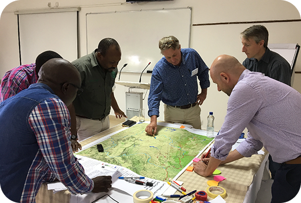

Verantwortungsvolle KI-Politik, Forschung & Führung in Europa vorantreiben
Wir erforschen und entwickeln partizipative Systeme, KI-Kompetenzprogramme und digitale Innovationen für eine nachhaltigere, informiertere und inklusivere digitale Zukunft.
Wir erforschen und entwickeln partizipative Systeme, KI-Kompetenzprogramme und digitale Innovationen für eine nachhaltigere, informiertere und inklusivere digitale Zukunft.
30000
Co-kreative Nutzer>60
Menschenzentrierte Innovationen>85%
Nutzerzufriedenheit>100
Partner
AI-CODE
Eine praxisnahe Auseinandersetzung mit dem verantwortungsvollen Einsatz von KI im Journalismus — Journalist:innen verstehen, wie große Sprachmodelle funktionieren, erkennen ihre Grenzen und setzen sie für vertrauenswürdigere Inhaltsproduktion ein.
Mehr erfahrenEIPCM ist ein gemeinnütziges Forschungsinstitut, das partizipative Systeme und digitale Anwendungen zur Bewältigung gesellschaftlicher Herausforderungen vorantreibt, mit besonderem Fokus auf aufkommende Technologien wie KI.
Unsere Partner
In Zusammenarbeit mit über 70 Institutionen und Unternehmen in 20 Ländern weltweit